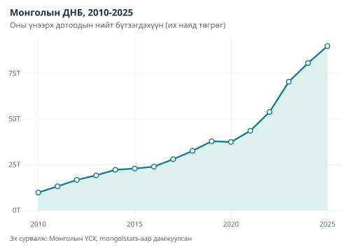
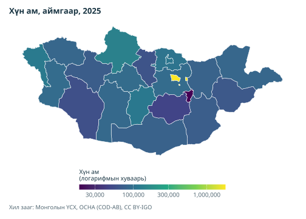

mongolstats нь Монгол Улсын Үндэсний статистикийн хорооны (ҮСХ) өгөгдөлд хандах боломж олгоно. R дотроос албан ёсны өгөгдөл авч, эдийн засгийн өөрчлөлт шинжилж, бүс нутгийн статистикийг зураглана.
Яагаад mongolstats гэж?
-
Шууд хандах:Албан ёсны олон мянган өгөгдлийн багцад шууд асуулга хийх эх сурвалж:
- Эмх цэгцтэй өгөгдөл: Англи эсвэл монгол нэртэй, шинжилгээнд бэлэн tibble хүснэгт.
-
Тогтвортой хугацааны сонголт: Он, сарыг
"2024"эсвэл"2024-03"зэрэг нэрээр буцааж, ҮСХ-ны хэрэглэдэг хугацааны аль ч бичлэгээр сонгоно. - Өөрчлөлтөд тэсвэртэй: ҮСХ ангилал дотроо шилжүүлсэн хүснэгтийг автоматаар олж, том хүсэлтийг серверийн хязгаарт багтаан хуваана.
- Зураглалд бэлэн: Үр дүнг ҮСХ-ны кодоор mongolmaps дагалдах багцын газрын зурагтай холбоно.
Суулгах
mongolstats багцыг CRAN-аас дараах байдлаар суулгана:
install.packages(c("mongolstats", "mongolmaps"))Эсвэл хөгжүүлэлтийн хувилбарыг GitHub-аас, mongolmaps-ийн нийтлэгдсэн хувилбарыг CRAN-аас суулгана:
Түргэн эхлэх
1. Эдийн засгийн хэмнэл: ДНБ-ий өөрчлөлт
Хүснэгт олсны дараа сонголтоо код эсвэл нэрээр өгч, өгөгдлөө татна:
library(mongolstats)
library(dplyr)
library(ggplot2)
nso_search("gross domestic product, by production approach") |>
select(tbl_id, tbl_eng_nm)
#> # A tibble: 7 × 2
#> tbl_id tbl_eng_nm
#> <chr> <chr>
#> 1 DT_NSO_0500_001V4 GROSS DOMESTIC PRODUCT, by production approach, by econom…
#> 2 DT_NSO_0500_001V6 GROSS DOMESTIC PRODUCT, by production approach, by econom…
#> 3 DT_NSO_0500_004V1 GROSS DOMESTIC PRODUCT, by production approach, by econom…
#> 4 DT_NSO_0500_022V1 GROSS DOMESTIC PRODUCT, by production approach, by econom…
#> 5 DT_NSO_0500_022V1-1 GROSS DOMESTIC PRODUCT, by production approach, by econom…
#> 6 DT_NSO_0500_001V1 GROSS DOMESTIC PRODUCT, by production approach, by econom…
#> 7 DT_NSO_0500_001V3 GROSS DOMESTIC PRODUCT, by production approach, by econom…
gdp <- nso_data(
tbl_id = "DT_NSO_0500_001V1",
selections = list(
"Statistical indicator" = "GDP, at current prices",
"Economic activity" = "Total",
Year = nso_period_seq("2010", "2025")
)
)
# Он нь нэрээрээ, шинэ оноосоо эхэлж ирнэ; "2025*" нь урьдчилсан тоог тэмдэглэнэ
head(gdp, 3)
#> # A tibble: 3 × 4
#> `Statistical indicator` `Economic activity` Year value
#> <chr> <chr> <chr> <dbl>
#> 1 0 0 2025* 89937128.
#> 2 0 0 2024 80663051.
#> 3 0 0 2023 70441516.
gdp |>
ggplot(aes(x = nso_period_date(Year), y = value / 1e6)) +
geom_area(fill = "#42b883", alpha = 0.6) +
geom_line(color = "#2c3e50", linewidth = 1.2) +
geom_point(color = "#2c3e50", size = 3, shape = 21, fill = "white", stroke = 1.5) +
scale_y_continuous(labels = scales::label_number(suffix = "T")) +
labs(
title = "Mongolia's GDP, 2010-2025",
subtitle = "Gross domestic product at current prices (trillion MNT)",
x = NULL,
y = NULL,
caption = "Source: NSO Mongolia via mongolstats"
) +
theme_minimal(base_size = 12) +
theme(
plot.title = element_text(face = "bold", size = 16),
plot.subtitle = element_text(color = "grey40"),
panel.grid.minor = element_blank()
)
2. Бүс нутгийн хүн амыг зураглах
ҮСХ-ны хүснэгт газар нутгийг кодоор ялгадаг. mongolmaps-ийн хил заагт мөн эдгээр код бий. Иймээс mn_join() нь хүснэгтийг газрын зурагтай нэг алхмаар холбож, аймгийн мөрүүдийг үлдээн, улс болон бүсийн дүнг хасна:
library(mongolmaps)
pop_tbl <- "DT_NSO_0300_002V1"
latest <- nso_latest_periods(pop_tbl)
pop <- nso_data(pop_tbl, selections = list(Year = latest))
pop |>
mn_join(by = "Region", level = "aimag") |>
mn_map(fill = value, trans = "log10", lang = "en", title = paste("Population by aimag,", latest)) +
labs(fill = "Population\n(log scale)")
Эх сурвалж ба мета өгөгдөл
0.4 ажлын урсгалд хянасан үзүүлэлтийн асуулга, эх сурвалжийн эшлэл, удаан хадгалах гарал үүслийн бүртгэл болон эх утгын төлөв нэмэгдсэн. Үзэл баримтлалаа сонгож, тодорхойлолт, нэгжийг нь шалгаад, анхны төлөвийн бүртгэлийг экспорттой хамт хадгална.
nso_indicators("GDP")
nso_indicator("gdp_current")
gdp <- nso_indicator_query("gdp_current", periods = c("2023", "2024")) |>
nso_fetch(labels = "en")
nso_table_info(gdp)
nso_citation(gdp)
nso_value_status(gdp)
nso_write_manifest(gdp, "gdp-provenance.json")
# Тодорхойлолт болон тусдаа нээлттэй өгөгдлийн порталыг судлах.
nso_metadata("indicator", 12925)
nso_indicators(source = "portal")Порталын үзүүлэлтийн болон газар нутгийн код нь өөрийн эх сурвалжийн схемтэй; албан ёсны нэр дутуу бол дутуу хэвээр үлдэнэ. Өгөгдлийн сангийн дэмжлэг нь зөвхөн хайж олоход зориулагдана. Экспорт, чанарын шалгалт, ангиллын тайлбар, каталогийн шинэ байдал болон туршилтын үйлчилгээний хязгаарыг үзэхийн тулд vignette("data-provenance", package = "mongolstats")-ээр эх сурвалж, мета өгөгдлийн хоёр хэл дээрх зааврыг нээнэ үү.
Баримтжуулалт
Бүрэн баримтжуулалтыг temuulene.github.io/mongolstats сайтаас үзнэ үү.
- Эхлэх нь - Анхны эпидемиологийн шинжилгээ
- Өгөгдөл хайх заавар - Хүснэгт олж, судлах
- Газрын зураглалын заавар - ҮСХ-ны өгөгдлийг mongolmaps ашиглан зураглах
Хувь нэмэр оруулах
Хувь нэмэр оруулахыг урьж байна! Дэлгэрэнгүйг хувь нэмэр оруулах заавраас үзнэ үү.